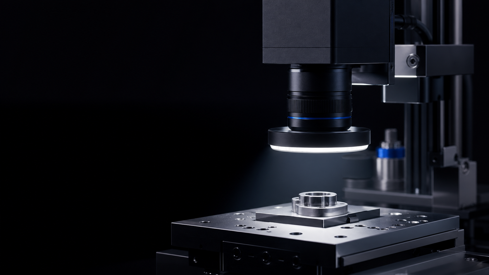
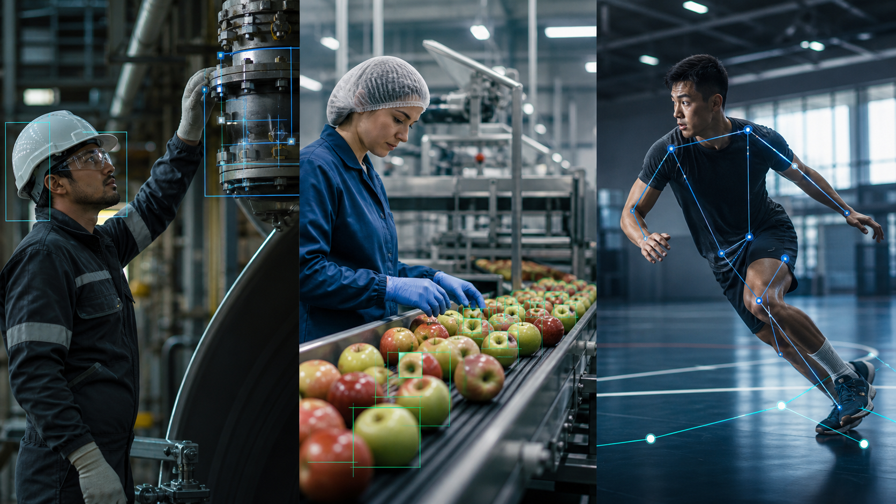

Resolver sin detenerse
- Asistencia técnica remota
- Copiloto de mantenimiento con IA
- Consulta guiada de procedimientos
 Iniciar un piloto ↗
Iniciar un piloto ↗
Smartglasses industriales que ayudan a operar, verificar y documentar en tiempo real. Inteligencia visual donde realmente sucede el trabajo.
01 / Producto protagonista
La cámara ve lo que ve el operador. La IA entiende el contexto, recupera conocimiento y deja evidencia sin interrumpir el flujo de trabajo.
 Visión contextual
IA en el borde
Audio manos libres
Visión contextual
IA en el borde
Audio manos libres
Una plataforma configurable para mantenimiento, calidad, seguridad y logística. Se integra con procedimientos, sistemas internos y modelos de IA según cada operación.
Caso clave / Scan & Locate
El operador registra un artículo y su posición con una mirada. Alba relaciona objeto, código y ubicación para ayudar a encontrarlo después y mantener el inventario actualizado.
02 / Alba Inspect
Módulos compactos de cámara, óptica, iluminación y Edge AI configurados para observar una tarea específica y repetirla con precisión.

Defectos, ensambles, presencia, orientación y validación dimensional.
Piezas, producto, materia prima y variantes separadas automáticamente.
OCR, códigos, lotes, fechas y números de serie conectados a su historial.
Conteos, ciclos, flujo y eventos convertidos en indicadores accionables.
03 / Consultoría de visión
Evaluamos el proceso antes de construir. Datos, óptica, modelos, hardware e integración se diseñan alrededor del resultado de negocio.

Factibilidad técnica, captura de datos y definición de métricas de éxito.
Una prueba acotada que demuestra valor dentro de la operación real.
Hardware, software y modelos conectados con los sistemas existentes.
Despliegue, monitoreo y mejora continua en estaciones, líneas o plantas.
04 / Ingeniería aplicada
Diseñamos alrededor de restricciones reales y validamos cada solución en el contexto donde deberá funcionar.

La inspección manual limitaba la repetibilidad y consumía tiempo especializado.
Visión integrada a la máquina existente, con captura controlada y análisis automático.
Un proceso consistente, trazable y preparado para comparar cada prueba.
Óptica · Iluminación · Procesamiento de imagen · Hardware
05 / Ecosistema Alba
La ingeniería industrial alimenta plataformas abiertas, productos de accesibilidad y sistemas visuales para misiones espaciales.
06 / Primer paso
Cuéntanos qué debe ver el sistema, dónde operará y qué decisión necesita mejorar. Empezamos con un diagnóstico y una ruta de piloto.